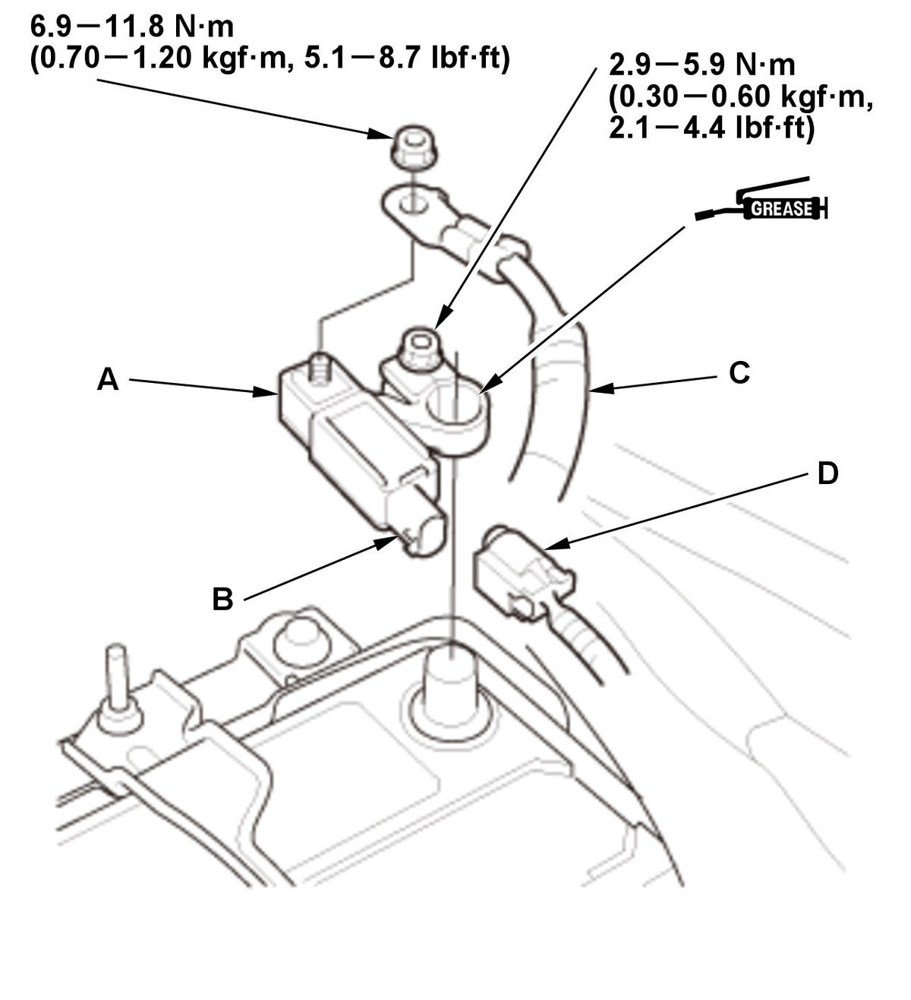

12 Volt Battery Sensor Removal and Installation: Installation
- 12 Volt Battery Sensor - Install

Courtesy of HONDA, U.S.A., INC.1. Install the 12 volt battery sensor (A) to the 12 volt battery.
NOTE:- Make sure the areas between the terminal and the 12 volt battery sensor are clean.
- To protect the connector (B) from damage, do not hold it when installing the terminal.
2. Connect the cable (C) on the 12 volt battery sensor.
3. Connect the connector (D).
4. Apply multipurpose grease to the terminal to prevent corrosion.
- Steering Angle Neutral Position - Learn